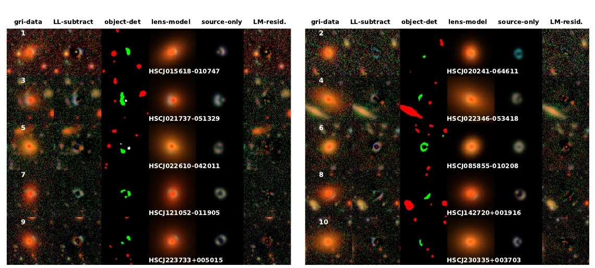

I combine physical modelling with machine-learning methods to translate astronomical observations into constraints on the systems behind them. Working across survey images, transient light curves, and high-energy data, I develop efficient and robust tools for extracting physical insight from complex datasets.
First-author paper · MNRAS · 2025
Scientific AI / Strong lensing
01
Strong-lens modelling with neural networks.
Galaxy–galaxy strong lenses encode the distribution of matter around foreground galaxies, but modelling them one at a time is too slow for the vast samples expected from next-generation astronomical surveys. To make their analysis fast, automated, and scalable, this work develops a convolutional neural network for predicting Einstein radii and mass ellipticities directly from Hyper Suprime-Cam images. The lenses are also modelled with YattaLens, an MCMC-based lens-modelling pipeline, enabling a direct comparison with the network predictions.
Key results
The network enables fast, automated parameter inference for large samples of galaxy–galaxy strong lenses.
Training samples perform best when they preserve the noise, foregrounds, and image complexity of the survey data.
Mass ellipticity estimates remain more sensitive to systematic differences between modelling methods.
Figure 6. Performance of the network trained on the LensLight sample: predictions for the simulated test sample (upper row) and the SuGOHI lens sample not processed by YattaLens (lower row). Source: Gawade et al. (2025).

Figure 9. Ten SuGOHI lenses through the modelling pipeline: original colour image, lens-light subtraction, object segmentation, best-fitting lens model, reconstructed source, and residual. Source: Gawade et al. (2025).
First-author paper · MNRAS · 2023
Dark matter / Gamma-ray bursts
02
Primordial black hole–dark matter abundance with GRB parallax.
If primordial black holes make up dark matter, a compact lens can magnify the same gamma-ray burst differently when it is observed from two separated locations. This “lensing parallax” offers a way to probe primordial black holes in the asteroid-mass window.
The paper models realistic GRB populations, detector sensitivity, wave-optics effects, and the geometry of twin Daksha-like satellites. It shows that lensing-parallax sensitivity improves substantially with detector separation, and that an Earth–Moon-scale baseline can deliver strong constraints on primordial black hole abundance in the asteroid-mass window.
Key resultDetector separation is crucial to making lensing parallax a powerful test of primordial black hole dark matter. A baseline comparable to the Earth–Moon distance could place strong constraints on their abundance in the asteroid-mass window.
Figures 3–4. Projected abundance constraints for low-Earth-orbit and Earth–Moon detector separations, compared with existing limits. Source: Gawade, More & Bhalerao (2023).
Collaboration paper · Experimental Astronomy · 2024
Mission science / High-energy transients
03
Science with the Daksha transient mission.
Daksha is a proposed twin-satellite mission designed to monitor the entire sky across energies from 1 keV to above 1 MeV. Its primary goals are to detect electromagnetic counterparts to gravitational-wave events and study gamma-ray bursts through sensitive timing, spectral, and polarization measurements.
The collaboration paper highlights the mission’s broad scientific reach, including X-ray pulsars, magnetar outbursts, fast-radio-burst counterparts, primordial-black-hole lensing, solar flares, and terrestrial gamma-ray flashes. I contributed to this collaboration through my research on primordial black holes and the lensing-parallax science case.
Scientific roleDaksha’s continuous all-sky monitoring provides a powerful platform for multi-messenger astrophysics and tests of fundamental physics.
Figure 1. The Daksha satellite concept, showing the low-, medium-, and high-energy detector packages arranged around the spacecraft. Source: Bhalerao, Sawant et al. (2024).